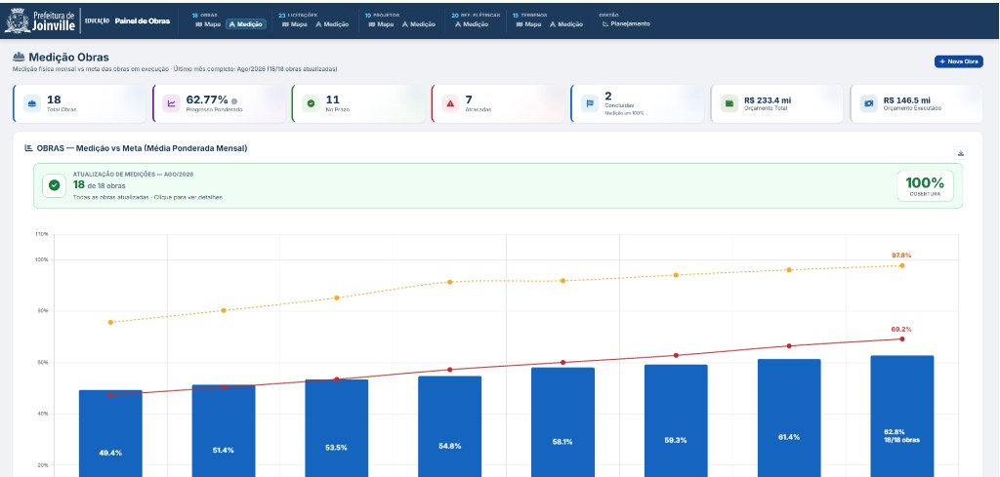

Contexto e Problema
A Unidade de Infraestrutura da SED precisava acompanhar, no mesmo instrumento, obras em execução, licitações, projetos, terrenos do Plano de Expansão e reformas elétricas — e ver isso no território do município, não só em planilha. A prefeita e a equipe operacional usam visões distintas do mesmo cadastro.
Interface


Solução Desenvolvida
Concebi e implementei o painel web (Google Apps Script + Leaflet): satélite e ruas, polígonos de bairros, pins por obra/licitação/projeto/terreno, filtros sincronizados com gráficos e esteiras que ligam terreno → projeto → licitação → obra. Coordenadas entram por ETL em Python (escolas, INEP e carga do Plano de Expansão 2025–2030).
- Georreferenciamento: latitude/longitude por entidade; só entra no mapa quem tem coordenada validável
- Território oficial: bairros da Prefeitura (SEPUD-GEO); shapefiles de município, subprefeituras e perímetro urbano como referência
- Gestão: medição mensal vs meta, cronograma financeiro e visão executiva para a Prefeita
Tecnologias Utilizadas
Resultados e Impacto
A infraestrutura escolar deixou de ser uma coleção de planilhas e passou a ter leitura territorial única — obras, licitações e terrenos no mapa de Joinville, com esteira de processo e medição contra meta. É o mesmo ofício de um observatório: fonte operacional, recorte geográfico e interface para o gestor.